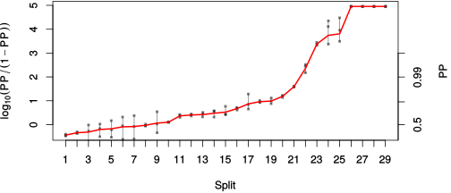

| chain # | burnin | subsample | Iterations (remaining) | command line | subdirectory | directory |
|---|---|---|---|---|---|---|
| 1 | 10000 | 1 | 90000 | /usr/local/bali-phy-3.0-beta2/bin/bali-phy cat_E6_E7_AA_red3_v2_PerissoArtio_Lambda_Alpha_all4Manatees_BetaGamma.fas -s 67829 -n cat_E6_E7_red3_v2_PerissoArtio_Lambda_Alpha_all4Manatees_BetaGamma_c1 | cat_E6_E7_red3_v2_PerissoArtio_Lambda_Alpha_all4Manatees_BetaGamma_c1-1 | /home/willemse/data/trees/BaliPhy/cat_E6_E7/red3_v2 |
| 2 | 10000 | 1 | 90000 | /usr/local/bali-phy-3.0-beta2/bin/bali-phy cat_E6_E7_AA_red3_v2_PerissoArtio_Lambda_Alpha_all4Manatees_BetaGamma.fas -s 90237 -n cat_E6_E7_red3_v2_PerissoArtio_Lambda_Alpha_all4Manatees_BetaGamma_c2 | cat_E6_E7_red3_v2_PerissoArtio_Lambda_Alpha_all4Manatees_BetaGamma_c2-1 | /home/willemse/data/trees/BaliPhy/cat_E6_E7/red3_v2 |
| 3 | 10000 | 1 | 90000 | /usr/local/bali-phy-3.0-beta2/bin/bali-phy cat_E6_E7_AA_red3_v2_PerissoArtio_Lambda_Alpha_all4Manatees_BetaGamma.fas -s 45262 -n cat_E6_E7_red3_v2_PerissoArtio_Lambda_Alpha_all4Manatees_BetaGamma_c3 | cat_E6_E7_red3_v2_PerissoArtio_Lambda_Alpha_all4Manatees_BetaGamma_c3-1 | /home/willemse/data/trees/BaliPhy/cat_E6_E7/red3_v2 |
| P(data|M) = -15150.419 +- 0.571 | Complete sample: 79331 topologies | 95% Bayesian credible interval: 68695 topologies |
Phylogeny Distribution

| Partition support: Summary |
| Partition support graph: SVG |
{kind=link}
| 50% consensus | Newick (+PP) | SVG | |||||
| 66% consensus | Newick (+PP) | SVG | |||||
| 80% consensus | Newick (+PP) | SVG | |||||
| 90% consensus | Newick (+PP) | SVG | |||||
| 95% consensus | Newick (+PP) | SVG | |||||
| 99% consensus | Newick (+PP) | SVG | |||||
| 100% consensus | Newick (+PP) | SVG | |||||
| MAP | Newick (+PP) | SVG | |||||
| greedy | Newick (+PP) | SVG |
{kind=link}
{kind=link}
{kind=link}
{kind=link}
{kind=link}
{kind=link}
{kind=link}
{kind=link}
Alignment Distribution
Partition 1
| Diff | Min. %identity | # Sites | Constant | Informative | ||||
|---|---|---|---|---|---|---|---|---|
| Initial | FASTA | HTML | Diff | 0.837% | 332 | 1 (0.301%) | 323 (97.3%) | |
| Best (WPD) | FASTA | HTML | AU | 8.27% | 846 | 11 (1.3%) | 281 (33.2%) |
Mixing
{kind=link}
{kind=link}
| burnin (scalar) | ESS (scalar) | ESS (partition) | ASDSF | MSDSF | PSRF-CI80% | PSRF-RCF |
|---|---|---|---|---|---|---|
| 1624 | 111 | 34.787 | 0.049 | 0.252 | 1.002 | 1.047 |
Projection of RF distances for the first 3 chains3D | Variation of split PPs across chains |
Scalar variables
| Statistic | Median | 95% BCI | ACT | ESS | burnin | PSRF-CI80% | PSRF-RCF |
|---|---|---|---|---|---|---|---|
| prior | -1091 | (-1173, -1013) | 216.6 | 1246 | 946 | 1.001 | 1.013 |
| prior_A1 | -1188 | (-1269, -1113) | 183.2 | 1473 | 946 | 1.001 | 1.012 |
| likelihood | -1.51e+04 | (-1.515e+04, -1.505e+04) | 241.9 | 1116 | 990 | 1 | 1.013 |
| logp | -1.619e+04 | (-1.626e+04, -1.613e+04) | 192.3 | 1404 | 1522 | 1.002 | 1.01 |
| Heat.beta | 1 | ||||||
| Scale1 | 16.05 | (11.62, 21.47) | 1.021 | 264421 | 177 | 1 | 0.9989 |
| S1.F.pi.A | 0.06184 | (0.05462, 0.06935) | 9.535 | 28317 | 393 | 1 | 0.9955 |
| S1.F.pi.R | 0.06736 | (0.05898, 0.07596) | 11.21 | 24095 | 286 | 1.001 | 1.005 |
| S1.F.pi.N | 0.03243 | (0.02745, 0.03776) | 8.295 | 32551 | 413 | 1 | 0.9913 |
| S1.F.pi.D | 0.04927 | (0.04235, 0.05627) | 15.36 | 17576 | 392 | 1.001 | 0.9966 |
| S1.F.pi.C | 0.05533 | (0.04662, 0.06429) | 9.221 | 29281 | 262 | 0.9999 | 1.003 |
| S1.F.pi.Q | 0.03657 | (0.03149, 0.04184) | 10.97 | 24621 | 116 | 0.9998 | 0.9944 |
| S1.F.pi.E | 0.06143 | (0.05393, 0.06957) | 21.4 | 12616 | 435 | 1 | 1.003 |
| S1.F.pi.G | 0.07629 | (0.06604, 0.08687) | 27.55 | 9801 | 613 | 1.001 | 0.9958 |
| S1.F.pi.H | 0.02706 | (0.02226, 0.03222) | 8.992 | 30027 | 400 | 0.9999 | 0.9939 |
| S1.F.pi.I | 0.04449 | (0.03849, 0.05066) | 8.561 | 31537 | 377 | 1 | 0.9979 |
| S1.F.pi.L | 0.114 | (0.1026, 0.1258) | 19.75 | 13668 | 295 | 1 | 0.9964 |
| S1.F.pi.K | 0.03604 | (0.03081, 0.0416) | 8.718 | 30970 | 257 | 0.9996 | 0.9973 |
| S1.F.pi.M | 0.008307 | (0.005938, 0.01091) | 8.347 | 32349 | 630 | 0.9994 | 1.005 |
| S1.F.pi.F | 0.04479 | (0.0378, 0.05198) | 10.71 | 25216 | 474 | 1.001 | 0.9969 |
| S1.F.pi.P | 0.04806 | (0.04028, 0.05596) | 9.553 | 28264 | 390 | 1 | 1.002 |
| S1.F.pi.S | 0.06152 | (0.05463, 0.06854) | 8.909 | 30308 | 219 | 1 | 0.9964 |
| S1.F.pi.T | 0.05174 | (0.04509, 0.05856) | 8.518 | 31699 | 406 | 1 | 1.002 |
| S1.F.pi.W | 0.01748 | (0.01297, 0.02237) | 7.966 | 33896 | 228 | 0.9997 | 0.9988 |
| S1.F.pi.Y | 0.0464 | (0.03924, 0.05398) | 9.557 | 28250 | 180 | 1 | 1.005 |
| S1.F.pi.V | 0.05801 | (0.05085, 0.06562) | 9.595 | 28138 | 408 | 1.001 | 1.002 |
| I1.RS07.meanIndelLengthMinus1 | 5.527 | (4.474, 6.758) | 67.74 | 3985 | 240 | 1 | 1.005 |
| I1.RS07.logLambda | -4.185 | (-4.389, -3.984) | 17.4 | 15521 | 121 | 1 | 1.002 |
| |A1| | 816 | (768, 860) | 2433 | 110 | 1178 | 0.9836 | 1.047 |
| #indels1 | 137 | (125, 148) | 215.8 | 1251 | 880 | 0.913 | 1.011 |
| |indels1| | 887 | (821, 959) | 363.7 | 742 | 1624 | 0.9963 | 1.001 |
| #substs1 | 2941 | (2899, 2979) | 1347 | 200 | 859 | 0.9745 | 1 |
| Scale1*|T| | 20.5 | (19.6, 21.43) | 24.65 | 10952 | 224 | 1 | 0.9991 |
| |A| | 816 | (768, 860) | 2433 | 110 | 1178 | 0.9836 | 1.047 |
| #indels | 137 | (125, 148) | 215.8 | 1251 | 880 | 0.913 | 1.011 |
| |indels| | 887 | (821, 959) | 363.7 | 742 | 1624 | 0.9963 | 1.001 |
| #substs | 2941 | (2899, 2979) | 1347 | 200 | 859 | 0.9745 | 1 |
| |T| | 1.277 | (0.9155, 1.687) | 1.011 | 266935 | 238 | 1 | 0.9983 |